AI Academy · Level 3 · Grade 8 · Week 36 · Student lesson
Creator Defense
Learn to understand, design, build, test and explain AI systems responsibly.
Project: Verified Study Buddy
Before you start
Weeks 33–35: defend claims with per-case records and limitations.
Plan time to read, investigate and explain. Keep predictions separate from observations.
Student lesson · 1 of 17
Your mission
Your learning target
I can explain the mechanism and terminology of generative systems defense.
I can apply the stated procedure to a new case with a traceable result.
I can identify an assumption or limitation and design a revealing follow-up.
Remember before reading
Close your notes first. A rough first answer helps us choose the right starting point; it is not a score for your ability.
Without opening the old lesson, explain one key idea from Capstone Evaluate and Improve. Give an example and a mistake that the idea helps you avoid.
Without opening the old lesson, explain one key idea from Capstone Design. Give an example and a mistake that the idea helps you avoid.
Without opening the old lesson, explain one key idea from Bias and Representation. Give an example and a mistake that the idea helps you avoid.
After trying, check the relevant lesson or ask your teacher. Change the part of your explanation that the evidence shows was wrong.
Week 36: Creator Defense
A creator explains architecture, evidence, limitations, provenance, and responsible use.
CREATOR MISSION
Demo and defend against fresh test and design questions.
Creator name and date:
Readiness for the connected explanation
Recall Capstone evaluation and revision. Explain why a recorded result needs its input conditions and evidence source before it can support a claim.
This week’s end goal
By the end, I can explain creator defense using a traced example and a stated limitation.
Student lesson · 2 of 17
Notice the evidence
PICTURE STORY
Notice → Predict → Explain
Begin with visible evidence. Do not explain more than the picture and information support.
MYSTERY
The learners must use creator defense to solve a problem. What information do they have? What decision or calculation do they make? What would count as evidence that it worked?
Three observations (what you can point to):
My prediction and the clue supporting it:
A closer explanation
A generative-system defense presents the question, architecture, corpus, permissions, baseline, evaluation and unresolved failures. Demonstration fluency is only one observable property.
Begin by writing the question the procedure is intended to answer. Identify the information already supplied, the information it will produce and the information still missing. These are constructed classroom examples; they do not require live accounts, private records or an external service. Do not treat a plausible explanation as a measured outcome.
Student lesson · 3 of 17
See how it works
VISUAL MECHANISM
Input → Process → Output
Trace the information. At each stage, ask what changed and how you could test it.
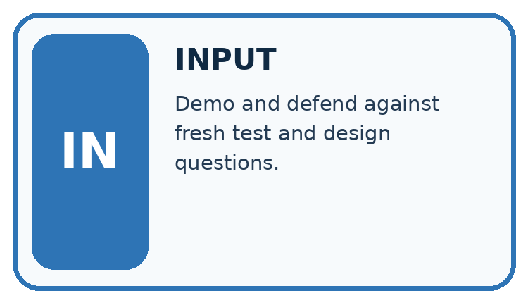
↓
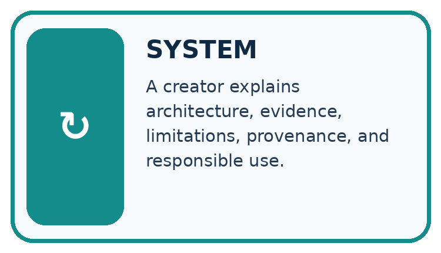
↓
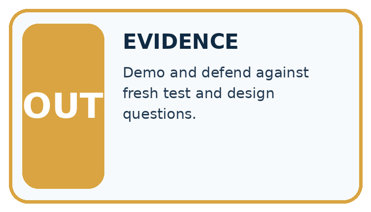
Which stage could fail even when the other two are correct? Explain:
A closer explanation
Link each claim to a recorded result. State the distinction between retrieval relevance, claim support, fallback and permissions. Give a reproduction packet and answer challenges without inventing missing measurements.
Generative systems defense — evidence trace
Before applying the procedure, write its units, denominator or decision boundary where relevant. A partner should be able to repeat each step using the same inputs. If a required input is absent or violates the stated contract, record that condition explicitly instead of quietly replacing it with a convenient value.
Connect the picture and the explanation
Point to the input, the deciding step and the result in this week’s visual. Explain the same step in ordinary words. A picture helps when you can say what each part represents.
Student lesson · 4 of 17
Compare the cases
CASE GALLERY
Four Tests, Four Kinds of Evidence
A system is not understood until it survives more than one comfortable example.


NORMAL CASE: predict and name evidence. BOUNDARY CASE: predict and name evidence.


MISSING INFORMATION: predict and name evidence. TRANSFER CASE: predict and name evidence.
Which case is most likely to reveal a hidden assumption? Why?
Change one thing in the pictured case
Change: Only the retrieval rate is put on the presentation poster.
Prediction: The poster omits the lower supported-answer rate and cannot imply 80% fully correct answers.
Reason: Retrieving useful evidence is an intermediate step, not proof that the final answer uses it correctly.
Student lesson · 5 of 17
Words that unlock the idea
VOCABULARY LAB
Words You Can Use to Reason
A definition matters when you can recognize the idea, use it, and contrast it with a near-miss.
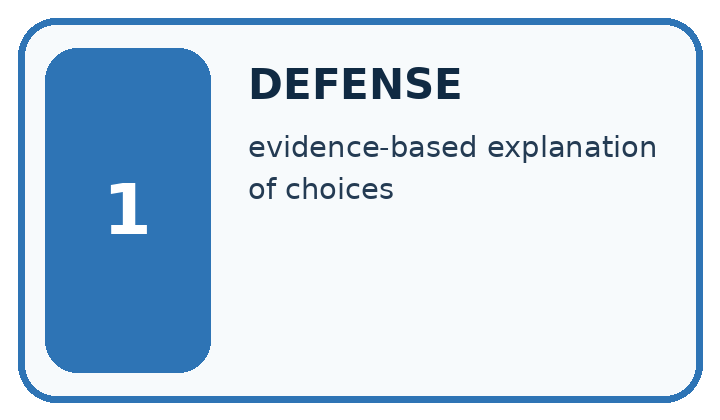
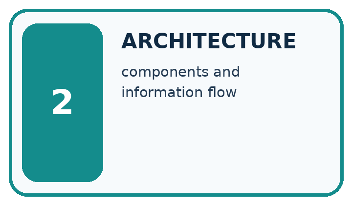
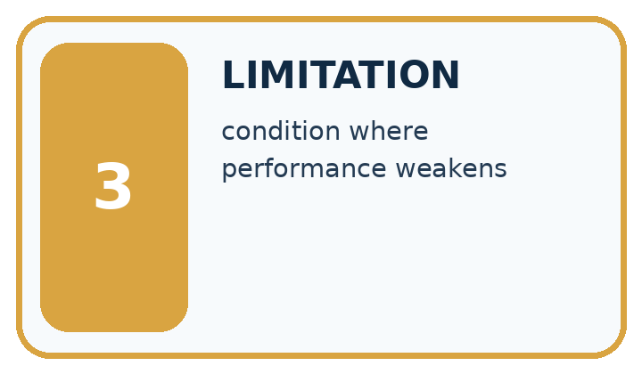
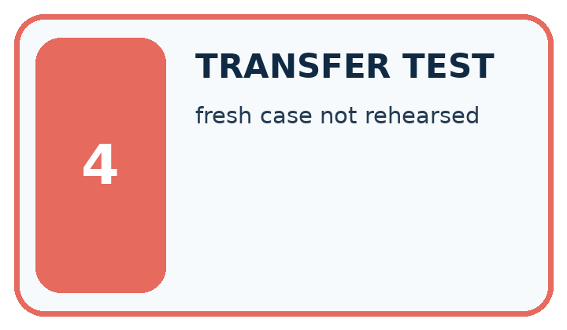
| Word | My own example | Not this / boundary |
|---|---|---|
| defense | An explanation of a project decision supported by evidence and an account of its limitations. | |
| architecture | The arrangement of a system's parts and the connections between them. | |
| limitation | A condition or missing capability that restricts what a result can establish or a system can safely do. | |
| transfer test | A fresh task that checks whether learning can be applied without the original supports. |
Words used in the closer explanation
| Word | Meaning |
|---|---|
| Defense claim | A statement tied to inspectable project evidence |
| Reproduction packet | Artifacts needed to repeat a reported procedure |
| Unmeasured outcome | A property for which the experiment supplies no observation |
Student lesson · 6 of 17
Follow a worked example
WORKED EVIDENCE
Reason Step by Step
Predict first. Then check each step. A correct answer without visible reasoning is incomplete evidence.
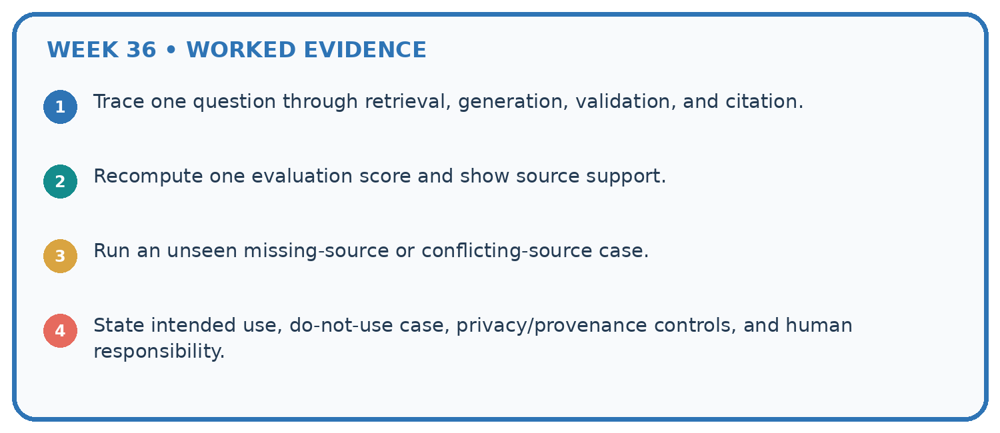
1. Trace one question through retrieval, generation, validation, and citation.
2. Recompute one evaluation score and show source support.
3. Run an unseen missing-source or conflicting-source case.
4. State intended use, do-not-use case, privacy/provenance controls, and human responsibility.
Recalculate, retrace, or restate the reasoning in your own representation:
CHECK Did the evidence answer the exact question? Did the total, path, or source record stay consistent?
A closer explanation
System reports 9/10 retrieved relevant records, 7/10 supported answers and zero actions in a read-only run. Presenter claims 90% fully correct and faster than baseline.
Retrieval rate 90% and support rate 70% differ. Action trace supports zero actions in that run; no timing evidence supports speed. Correct the full-correctness and speed claims.
Compare the intermediate evidence with the final statement. Explain why each number or decision follows from the stated inputs. The conclusion belongs to this scenario and procedure; changing the inputs, evaluation population or authority can change what it establishes. Retain the raw record so a later revision can be compared honestly.
Learn from the worked case
Cover the result before checking it. Say what is given, choose the procedure, and follow one step at a time. Then uncover the result and explain your first mismatch. Ask why a step is allowed, not only what number it produces.
A pictorial worked case: Creator Defense
Defend a study-buddy project using separate claims and matching evidence.
The facts we will use
Set A: 15 answerable questions, with 12 relevant retrievals and 9 supported answers. Separate set B: 5 missing-source questions, with 4 appropriate fallbacks. No speed measurements exist.
All inputs and outcomes in this worked example are invented classroom data; no real model run is claimed.
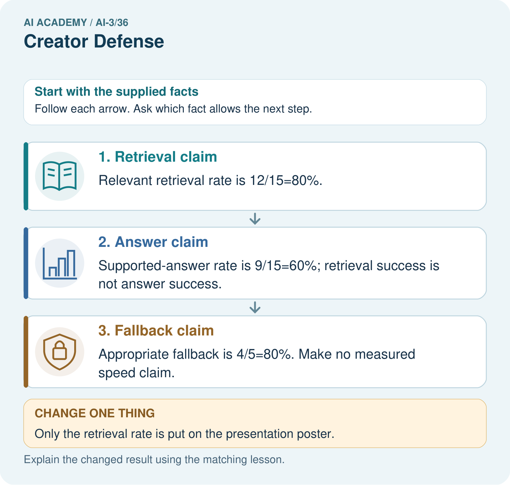
Read the picture one step at a time
Why this result follows
Read the picture in order. Appropriate fallback is 4/5=80%. Make no measured speed claim. The arrows show which recorded input or intermediate result each decision uses. Explain the deciding step aloud before checking the changed case; pointing to the final answer alone does not show how it follows.
What this example does not establish
These invented counts illustrate defense structure; the class must replace them with its own documented evidence.
Read the labelled picture: Which numbers would you display to make the defense honest? Point to the relevant step in the picture, then write the changed result and the rule or evidence that supports it.
Change one thing: Only the retrieval rate is put on the presentation poster. Predict the result before checking the explanation. What remains the same?
Student lesson · 7 of 17
Find and repair a mistake
ERROR DETECTIVE
Compare → Diagnose → Repair
Do not patch the answer. Find the earliest unsupported assumption, wrong step, or weak evidence.
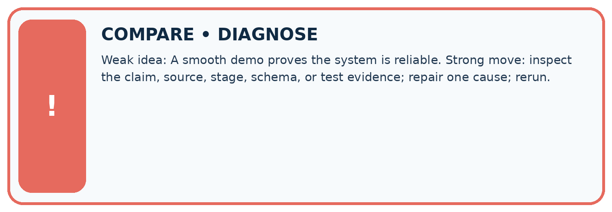
| Evidence record | Expected | Actual | Likely cause / next test |
|---|---|---|---|
| normal case | works | ||
| boundary case | stated rule | ||
| missing input | safe response | ||
| fresh transfer | generalizes |
Repair one cause. Why is this repair better than changing several things?
A closer explanation
Complete the supported workbook tasks before attempting W4 independently. Record any hints or help used. After feedback, use the teacher's fresh retry rather than copying the earlier answer. For a project, select a relevant new case, predict the outcome from the declared rule and preserve the result alongside any revision.
Student lesson · 8 of 17
Practise together
LOGIC STUDIO
Specify Before You Run
Prompts, schemas, retrieval, tool calls, and code are inspectable parts of one AI product.

SET task, audience, constraints, output_schema LOAD approved_context or retrieval_result CALL model or allowed_tool VALIDATE fields, claims, citations, and safety IF evidence missing: ask, retrieve, or abstain RETURN useful output + source trail + limitations
Trace one input. Which line changes the state or chooses a path?
A closer explanation
A defense should preserve negative evidence and uncertainty rather than treating polished presentation as proof.
A useful check asks what would make the reasoning fail. Distinguish a failure to execute the declared procedure from a weakness in the procedure itself. The first may require a correction; the second requires an explicitly revised method and new evidence. Preserve unsuccessful cases so an improved result cannot hide the original problem.
Practise with less help: Trace the worked case
Use workbook W2 for the connected example “Generative systems defense”. First fill the input and rule boxes. Try the middle steps before asking for a hint. After a hint, try the next step yourself.
| Plan | Do | Check |
|---|---|---|
| What is given? Which rule or procedure applies? | Record each intermediate step. | Does the result follow? What remains unknown? |
Explain your trace to a partner. Your partner points to one step to check. Swap roles on the next case. Each person writes their own explanation.
Check your reasoning
Use the worked case for Generative systems defense. Proposed explanation: “The worked result establishes every future case”. Decide whether this explanation is supported. Point to the step or supplied fact that decides; explain your repair if needed.
Answer on your own before discussion. If you are unsure, say which step you need help with.
Explain the picture
Which numbers would you display to make the defense honest? Point to the relevant step in the picture, then write the changed result and the rule or evidence that supports it.
This is supported practice. Keep the separately named independent case for an attempt before feedback.
Student lesson · 9 of 17
Run the investigation
EVIDENCE LAB
Predict → Test → Record → Explain
Keep expected and actual results separate. Surprises are useful data when recorded honestly.
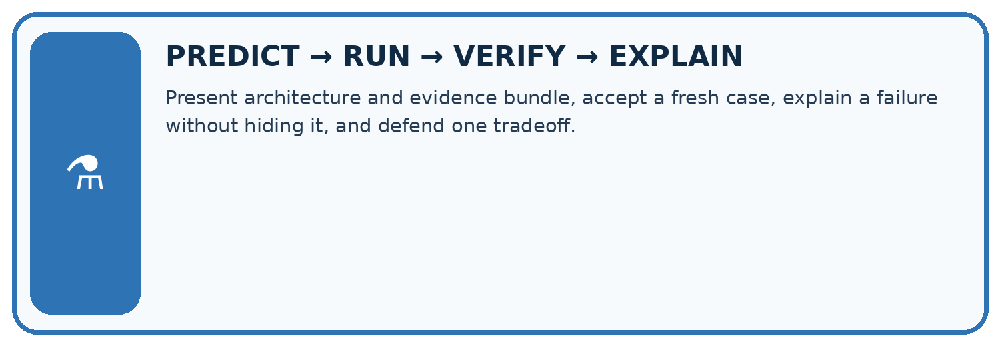
Present architecture and evidence bundle, accept a fresh case, explain a failure without hiding it, and defend one tradeoff.
| Test / input | Prediction | Actual | Evidence / calculation | Change or keep? |
|---|---|---|---|---|
| normal | ||||
| boundary | ||||
| missing | ||||
| fresh transfer |
What did the hardest test teach you that the normal test did not?
Plan → try → check
Before trying: what do I expect, and why? While trying: which step could first go wrong? Afterwards: what did I actually observe, and what should change? Keep “not run” if you only traced the procedure.
Student lesson · 10 of 17
Build your understanding
MASTERY
From Knowing the Word to Owning the Idea
Move upward only when you can produce evidence without copying the worked example.

1 • NAME: Define the concept without repeating the textbook.
2 • TRACE: Show the information, state, branch, calculation, or evidence path.
3 • APPLY: Solve a different example independently.
4 • CHALLENGE: Find a boundary case, counterexample, or unfair outcome.
5 • EXPLAIN LIMITS: Say when the result should not be trusted or used alone.
My strongest evidence of independent understanding:
Student lesson · 11 of 17
Connect your project
CUMULATIVE PROJECT
Verified Study Buddy
Every week adds one inspectable piece. The system must show how it reached a result.
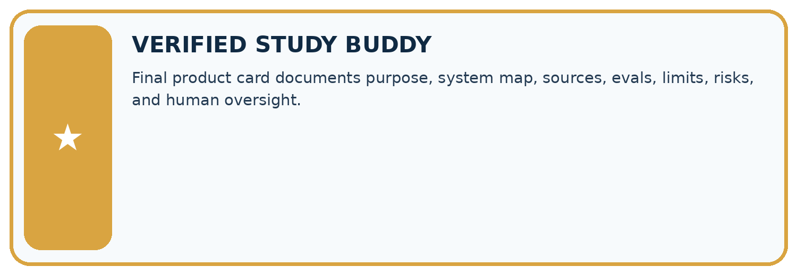
THIS WEEK’S CHECKPOINT Final product card documents purpose, system map, sources, evals, limits, risks, and human oversight.
SYSTEM MAP Learner need → prompt/schema → approved sources/retrieval → model/tool → structured answer → verification → human decision
What will you add, change, or verify in the project this week?
What should remain under human control?
RESPONSIBLE DESIGN Collect only necessary information. Show uncertainty and limits. Never confuse fluent output with verified truth.
Evidence for your project
For your Verified Study Buddy, save the input, procedure, observed result and limitation of this check. Label this worked example as practice; use a different, previously unreviewed case when checking independent understanding.
Student lesson · 12 of 17
Show what you know
INDEPENDENT MASTERY PROOF
Explain • Transfer • Test • Defend
Complete this page without copying the worked example. Your reasoning matters more than decoration.
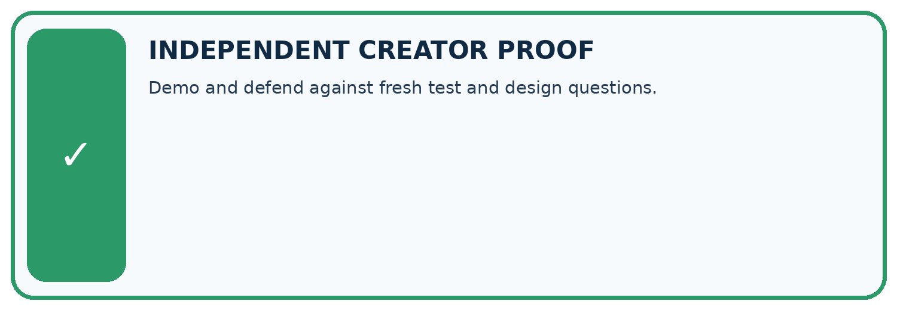
CHALLENGE Demo and defend against fresh test and design questions.
1. My fresh example, trace, calculation, or design:
2. My evidence that it works (include a boundary or missing-data case):
3. One limitation, fairness concern, or situation needing human review:
SELF-CHECK □ I explained the mechanism □ I used evidence □ I tested a fresh case □ I named a limitation □ I can answer ‘why?’
Student lesson · 13 of 17
Study a complete case
Week 36 Worked case
Use the supplied details to practise the weekly concept before attempting the independent question. This case extends the illustrated lesson.
The situation
Ten successful demos lead to a never hallucinates claim.
The question
Write a defensible conclusion.
Worked explanation
Report those ten specified passes, show evidence and fallback, and state untested conditions. Demonstrate an unanswerable question.
Explain it in your own words
Which detail supports the answer, and why does it matter?
Trace the supplied case visually
Defend a bounded claim
| Evidence or stage | Value or result |
|---|---|
| Result | Ten specified demonstrations passed |
| Evidence | Show sources and checks |
| Limit | Other conditions remain untested |
| Demonstration | Show an unanswerable question |
Ten successful demos lead to a never hallucinates claim.
Write a defensible conclusion.
Report those ten specified passes, show evidence and fallback, and state untested conditions. Demonstrate an unanswerable question.
Student lesson · 14 of 17
Try a new case independently
Independent case: Apply a new case independently
A defense has retrieval 8/10, support 6/10, fallback 3/4 and no measured latency. State the three rates and reject one unsupported claim.
Attempt this case before feedback. Record any help. Earlier examples below are further practice; a case already practised with feedback cannot establish fresh transfer.
Week 36 Independent application
Close the worked explanation. Apply the idea to this different question without copying.
An audience asks whether your assistant is always correct. Give an evidence-based defense using results and a limit.
My answer, with a trace, calculation or supporting evidence
Create and test
Change one relevant detail. Predict the result before testing. Include a boundary or missing-information case when it helps reveal a limit.
My changed input and expected result
Connect to your project
Final product card documents purpose, system map, sources, evals, limits, risks, and human oversight.
The evidence I will keep
Your teacher has the independent answer and scoring criteria. Complete the matching workbook week to keep your practice evidence together.
Transfer practice from the original programme
Your assistant passes 9/12 final questions, including all six direct facts but only 3/6 ambiguous or absent-evidence cases. Report results and argue for a focused next step.
Use feedback to improve
Attempt the independent case before hints. Record whether you worked alone, used a hint or followed a model. After feedback, fix the first unsupported step and explain why it changed. A later check uses a changed case, not a copied answer.
Student lesson · 15 of 17
Your lesson route
Start with this question: Defend a study-buddy project using separate claims and matching evidence.
| By the end, I can | How I will show it |
|---|---|
| Explain the mechanism and terminology of generative systems defense | Explain the deciding step, show a trace or test, and state one limit. |
| Apply the stated procedure to a new case with a traceable result | Explain the deciding step, show a trace or test, and state one limit. |
| Identify an assumption or limitation and design a revealing follow-up | Explain the deciding step, show a trace or test, and state one limit. |
Remember → watch and explain → try with help → investigate → try independently → keep project evidence. Your teacher may spread this lesson across several classes.
Keep your first prediction. Compare it with what the evidence shows and explain any change.
Student lesson · 16 of 17
Finish and return
Close your notes. Explain this goal in your own words: Explain the mechanism and terminology of generative systems defense
If you are unsure, return to the worked picture and explain one arrow. If you are ready, change an input or assumption and justify your prediction.
Save your workbook evidence. At the next review, try a different case before opening your old answer.
Student lesson · 17 of 17
Supported practice, repair and portfolio
Use this supported practice once, in the browser or on paper. Keep the reserved independent assessment for a separate first attempt before teacher feedback.
Defend a study-buddy project using separate claims and matching evidence.
Practice 1: explain the deciding evidence
Which labelled step matches this detail? Appropriate fallback is 4/5=80%. Make no measured speed claim.
1. Fallback claim
2. Answer claim
3. Retrieval claim
Hint if needed: Read the steps in the pictorial case. Match the supplied detail to the stage that performs or records it.
After your attempt, compare with the supported explanation: Fallback claim Appropriate fallback is 4/5=80%. Make no measured speed claim. Read the picture in order. Appropriate fallback is 4/5=80%. Make no measured speed claim. The arrows show which recorded input or intermediate result each decision uses. Explain the deciding step aloud before checking the changed case; pointing to the final answer alone does not show how it follows.
Practice 2: explain the deciding evidence
Changed-case practice: Only the retrieval rate is put on the presentation poster. Which conclusion is supported by the supplied facts?
1. This one example guarantees correct results for every future input.
2. The poster omits the lower supported-answer rate and cannot imply 80% fully correct answers.
3. We can decide the result without examining the changed input or the procedure.
Hint if needed: Use the changed condition and the deciding step in the pictorial trace. The answer must say what follows from those facts.
After your attempt, compare with the supported explanation: The poster omits the lower supported-answer rate and cannot imply 80% fully correct answers. Retrieving useful evidence is an intermediate step, not proof that the final answer uses it correctly.
Repair a missing building block
Review Capstone Evaluate and Improve (ai-3/35). Goal: Explain the mechanism and terminology of capstone evaluation and revision. Short practice: May the team call the repaired validation cases an untouched final test? Point to the relevant step in the picture, then write the changed result and the rule or evidence that supports it.. Return to this week and explain what you changed.
Review Capstone Design (ai-3/33). Goal: Explain the mechanism and terminology of capstone requirements and corpus. Short practice: What should the project plan record before the new flower test? Point to the relevant step in the picture, then write the changed result and the rule or evidence that supports it.. Return to this week and explain what you changed.
Review Bias and Representation (ai-3/30). Goal: Explain the mechanism and terminology of representation and bias evaluation. Short practice: Explain why comparing six correct answers in each group would mislead. Point to the relevant step in the picture, then write the changed result and the rule or evidence that supports it.. Return to this week and explain what you changed.
Keep your completed work
Use Download completed work in the hosted lesson to export your answers, reflections, practice feedback and code-run evidence. Open the HTML copy to read or print it. Drafts stay in this browser when storage is available; clear drafts on a shared device.